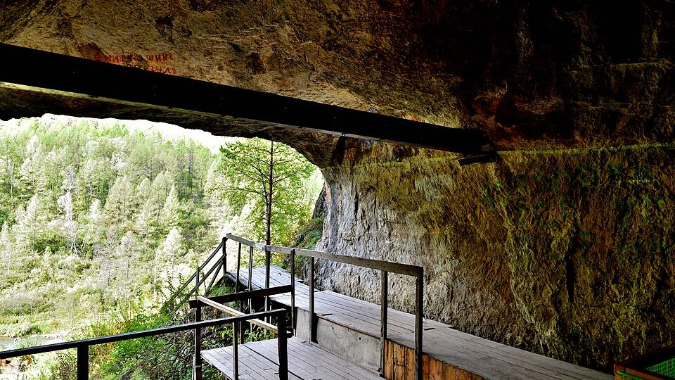

Denisovans — the lineage discovered in a finger
It was not a skull, it was not a skeleton, it was not an excavation site. It was a fragment of a finger bone the size of a grain of rice, which nobody looked at twice, and which held the genome of an entire human lineage whose existence no one had suspected.
- Where
- Denisova Cave, Altai
- First fossil
- Finger bone, 2008
- Identification
- 2010, by DNA
- Time span
- ≈ 250 thousand – 32 thousand years
- Known fossils
- A few dozen fragments
- Living inheritance
- Up to ≈ 5% in Oceania
The cave sits on a slope of the Anui River valley, in the Altai Mountains, southern Siberia. The entrance opens on the southwest slope, some thirty meters above the riverbed, and it is dry. It was a crevice seven meters by one meter seventy before the excavations; today the ceiling reaches six meters and you can walk in standing up. It was occupied by people for hundreds of thousands of years, in layers: sediment upon sediment, each with its stone flakes, its bones of eaten animals, its hearth charcoal. In the summer of 2008, a team from the Institute of Archaeology and Ethnography of the Russian Academy of Sciences, under the direction of Michael Shunkov, was sieving layer eleven when a fragment of dark bone turned up, smaller than the nail of a little finger.
It was the tip of a finger bone. From a girl, as was later learned. Nobody, at the time, had any reason to think it special — fragmented human bones are the most common find in an excavation like that, and the cave had already yielded many. The fragment was cataloged, packed and, following a procedure that was then becoming routine, had a sample sent to the Max Planck Institute for Evolutionary Anthropology, in Leipzig, for sequencing.
That was where the story stopped being about a bone.
01What the DNA said
In March 2010, the team of Johannes Krause and Svante Pääbo published the mitochondrial DNA extracted from the fragment. The result looked like nothing anyone expected. It was not a modern human. It was not a Neanderthal — and by then the Neanderthal genome was already being assembled in the same laboratory, so the comparison was immediate and reliable. It was a third thing.
Later in 2010 the nuclear genome came out, and it confirmed it: that bone belonged to a population that had diverged from the common trunk hundreds of thousands of years earlier, that lived alongside Neanderthals and modern humans, and about which paleoanthropology had absolutely no information. No one even knew that a molar excavated there in 2000, stored as an undetermined archaic human, came from the same people — something only the nuclear genome would reveal. Not one attributed tool, not a name.
The name came from the only known address: Denisovans, after Denisova Cave. It is a reversal of the discipline's normal procedure. A fossil species or population is usually described from its anatomy — the skull is measured, the teeth are compared, it is debated for decades. Here the anatomy was a fingertip. What defined the group was genetics, and only afterward did the community go looking for the bones.
02Denny
In 2012, the same cave yielded another fragment, cataloged as Denisova 11. It was a piece of long bone, from a girl at least thirteen years old. The sequencing, published in 2018, produced a result that was at first received with suspicion: half of her genome was Neanderthal and half was Denisovan.
Not the diluted mixture of an ancient interbreeding, which would show up scattered across the genome in small fragments. Half and half, in the pattern of someone with a mother from one group and a father from the other. Neanderthal mother, Denisovan father. A first generation.
Finding this is statistically improbable in the extreme — unless such encounters were much more frequent than had been assumed. The researchers had a handful of fossils in their hands, and one of them was a direct hybrid. The uncomfortable inference is that the boundary between archaic human populations was much more porous than the word "species" makes it seem.

03They are in us
The part of the story that leaves the cave and reaches the present is this: the Denisovans did not entirely disappear. They are in the genome of living people.
In populations of Melanesia, such as those of Papua New Guinea, Denisovan ancestry reaches about 5%. Among Aboriginal Australians, the proportion is similar. And the record is in neither: the Ayta Magbukon, an Indigenous people of Luzon, in the Philippines, carry the highest Denisovan ancestry ever measured — 30% to 40% more than Papuans. On the Asian mainland and in the Americas, it drops to something around 0.2% — small, but present.
And there is one case in which this inheritance is not merely a statistical trace: it works. Populations of the Tibetan Plateau carry a variant of the EPAS1 gene that regulates the body's response to a lack of oxygen. Those without it, at high altitude, produce too many red blood cells, the blood thickens and pregnancy becomes complicated. Those with it, do not. This variant entered the human lineage through interbreeding with Denisovans.
A lineage extinct for tens of thousands of years still decides who can live at four thousand meters of altitude. The practical consequence of EPAS1
04The fossils that were in storage
With the group defined by genetics, it still had to be found. And the most remarkable thing is where it was found: in collections, drawers and storerooms. For fifteen years, the best-known finds — Xiahe, Penghu, Harbin — required no new excavation, even if there were exceptions, such as the Baishiya rib and a molar in Laos. In September 2026, Bianfu Cave tipped the balance the other way. It closes this section.
Xiahe, 1980
A Buddhist monk found half a jawbone in the Baishiya Karst Cave, on the Tibetan Plateau, and handed it over to a monastery. It went almost forty years without identification. In 2019, the piece was examined by paleoproteomics — the reading of the proteins preserved in enamel and bone, which survive far longer than DNA — and the sequences came back Denisovan. Uranium-series dating of the mineral crust placed the jaw at more than 160 thousand years. It was the first Denisovan outside Siberia, and in a place 3,280 meters above sea level, which tied in elegantly with the story of EPAS1.
Penghu, dredged from the sea
A male jawbone hauled up by a trawl net in the Taiwan Strait, bought from an antique dealer in 2008 and later donated to a museum. It remained classified as an undetermined archaic human. Protein analysis published in 2025 identified it as Denisovan, pushing the group's range from the Siberian cold to the subtropics.
Harbin, 1933
This is the case that closes the arc. According to the family's account, a laborer found an almost complete skull during construction work on a bridge in Harbin, in northeastern China, in 1933, during the Japanese occupation. Instead of turning it in, he hid it inside a well. It stayed there for about eighty-five years. The family only handed it over to researchers in 2018.
The skull is spectacular: huge, with a heavy brow ridge and wide eye sockets, and in a state of preservation that no other Asian archaic fossil has. In 2021 it was described as a new species, Homo longi — Dragon Man. The epithet does not come from the Songhua, where the skull turned up, but from Heilongjiang, Harbin's province, whose name means "black dragon river."
In June 2025, two studies changed the status of the piece. One extracted proteins from the bone; the other obtained mitochondrial DNA from the dental calculus — the calcified plaque on the teeth, which traps biological material and protects it. The two lines converged: the Harbin skull is Denisovan.
Fifteen years after the finger bone, the lineage that existed only as a genetic sequence got a face. And the face had been in a well, and then in a museum, all that time.
05The theories, from the most sober to the most improbable
A wide, diverse and long-lived Asian population
It is the reading that the sum of the finds imposes. Denisovans occupied the land from southern Siberia to the Pacific subtropics, from 3,280 meters of altitude to sea level, for something around 170 thousand years. The genetic variation among the known samples suggests lineages distinct enough that "Denisovan" describes less a homogeneous population and more a branch with several offshoots.
How many are already in museums, poorly cataloged
Of the group's four best-known fossils — the finger bone, Xiahe, Penghu and Harbin — three did not come from an excavation: they came from a monastery, a fishing net and a well. The reasonable inference is that others are sitting in drawers of Asian collections under generic labels, waiting for protein analysis.
It is a hypothesis with high plausibility and no confirmation — by definition, it can only be confirmed piece by piece. But it points to a concrete, and cheap, research strategy: re-examine collections instead of opening new sites.
Is Homo longi a species, or is it the wrong name?
If the Harbin skull is Denisovan, the nomenclature runs into conflict. The 2021 description created Homo longi from anatomy; the 2025 identification links the piece to a group defined by genetics and that never received a formal species name. One school proposes that "Denisovan" be treated as Homo longi from now on; another holds that the group's internal variation is too great to fit in a single species.
The dispute is taxonomic, not factual — no one disputes the data. But it matters: the name defines what goes in the same box, and the box determines the next questions.
Giants, missing links and forgotten civilizations
The Harbin skull is large, and that was enough for it to circulate as proof of a race of giants. Its size is consistent with a robust adult of its lineage, and nothing about the Denisovans points to technology, architecture or anything beyond what one would expect of Pleistocene hunter-gatherers — which is a hard and sophisticated life, but not a lost civilization.
The expression "missing link" does not apply either. It is not a chain with a link missing: it is a bush with several branches that lived side by side, interbred and, almost all of them, came to an end. We are the branch that remained — and we carry pieces of the others.
06Chronology
- ≈ 250 to 170 thousand years agoDenisovan DNA recovered from the sediment of Denisova Cave itself, deeper than any fossil (Zavala et al., 2021). The oldest fossil with a genome, the Denisova 25 molar, dates to about 200 thousand years (2025 preprint).
- > 160 thousand years agoAge of the Xiahe jawbone, from Baishiya Cave, on the Tibetan Plateau.
- ≈ 190 – 70 thousand years agoPeriod of intermittent occupation of Bianfu Cave, in Yunnan, in southwestern China.
- ≈ 167 – 134 thousand years agoAge of the Denisovan fossils from Bianfu: four teeth, two skull fragments and a radius.
- ≈ 76 – 52 thousand years agoRevised range for the finger bone from Denisova Cave.
- ≈ 48 – 32 thousand years agoAge of a rib fragment from Baishiya identified in 2024 — the most recent known Denisovan record.
- 1933The Harbin skull is found during work on a bridge and hidden in a well, according to the family's account.
- 1980A Buddhist monk collects the Xiahe jawbone in Baishiya Cave.
- 2008Michael Shunkov's team recovers the finger-bone fragment in Denisova Cave. That same year, the Penghu jawbone is bought from an antique shop in Taiwan.
- March 2010Krause, Pääbo and colleagues publish the mitochondrial DNA: neither modern human nor Neanderthal.
- late 2010The nuclear genome comes out and confirms the distinct lineage.
- 2014The Denisovan origin of the EPAS1 variant in Tibetan populations is identified.
- 2018Publication of Denisova 11: Neanderthal mother, Denisovan father. The Harbin family hands the skull over to researchers.
- 2019The Xiahe jawbone is identified as Denisovan by paleoproteomics — the group's first fossil outside Siberia.
- 2021The Harbin skull is described as a new species, Homo longi.
- June 2025Proteins from the bone and mitochondrial DNA extracted from the dental calculus identify the Harbin skull as Denisovan. That same year, the Penghu jawbone as well.
- September 9, 2026Bianfu Cave, in Yunnan, yields four Denisovan teeth, two skull fragments and a radius, with a stone-tool industry, extensive use of bone and specialized hunting of medium and large prey. It is the most complete material repertoire ever directly associated with Denisovan fossils.
07What remains open
The simplest question remains unanswered: what they looked like. Until 2025 there was no skull; now there is a complete one, plus the cranial fragments from Bianfu. One individual does not describe a population, and it is not known how much of what is seen in Harbin is typical and how much is particular to that man.
What they did became less empty in 2026, but it is still thin. At Denisova Cave the problem is one of attribution: the site was occupied in turn by Denisovans, Neanderthals and modern humans, and separating who made which tool in which layer is difficult — there are ornaments and a worked chlorite bracelet in the Denisovan layers, but their authorship is debated. Bianfu raised the bar by yielding a stone-tool industry and bone use directly associated with Denisovan fossils. Even so, it is one site; there is nothing comparable to the accumulated repertoire known for the Neanderthals.
Why they came to an end is the third. The most recent record falls around 32 thousand years ago — a few millennia after the Neanderthals had vanished from Europe, which happened around 40 thousand. Competition, disease, climate change, absorption through interbreeding — all the hypotheses are on the table and none has decisive evidence. The genetic inheritance in living populations suggests that "disappear" is the wrong word for at least part of the process.
And that is why this case belongs to this pillar. The discovery did not happen in the field, it happened in the laboratory — and much of what remains to be discovered is probably already cataloged in some drawer, under a label that says only "hominid, undetermined."
08Frequently asked questions
Who were the Denisovans?
An archaic human lineage identified in 2010 from the DNA of a finger-bone fragment from Denisova Cave, in the Altai Mountains, southern Siberia. It diverged from the common trunk hundreds of thousands of years earlier and lived alongside Neanderthals and modern humans. The name comes from the cave, and the group never received a formal species name.
What did Denisovans look like?
That is the question that remains open. Since 2025 there has been a complete skull, the one from Harbin, huge, with a heavy brow ridge and wide eye sockets; but one individual does not describe a population, and it is not known how much of it is typical.
Were Denisovans giants?
No. The Harbin skull is large and circulated as proof of a race of giants, but its size is consistent with a robust adult of its lineage. Nothing about the Denisovans points beyond Pleistocene hunter-gatherers. See the theories.
What is the difference between Denisovans and Neanderthals?
The difference was defined by genetics: the DNA from the finger bone was neither modern human nor Neanderthal, it was a third lineage. But the two groups interbred — Denny, of Denisova 11, had a Neanderthal mother and a Denisovan father. And much less is known about the Denisovans: there is nothing comparable to the accumulated material repertoire of the Neanderthals.
Where did Denisovans live?
Judging by the identified fossils, from southern Siberia to the Pacific subtropics: Denisova Cave in the Altai, Xiahe on the Tibetan Plateau at 3,280 meters, Penghu in the Taiwan Strait, Harbin in northeastern China and Bianfu in Yunnan. Their inheritance today is found above all in Melanesia, Australia and the Philippines. See the fossils that were in storage.
09Sources consulted
This dossier is original writing. The sources below were consulted to verify dates, measurements and attributions; none was reproduced.
- Shunkov, M. V. — The Denisova Cave – everything changes, but nothing disappears. Science First Hand 49(2), June 2018.
- Krause, J.; Pääbo, S. et al. — The complete mitochondrial DNA genome of an unknown hominin from southern Siberia. Nature 464, March 2010. DOI 10.1038/nature08976
- Reich, D. et al. — Genetic history of an archaic hominin group from Denisova Cave in Siberia. Nature 468, December 2010, which also identified the Denisova 4 molar as a second individual. DOI 10.1038/nature09710
- Reich, D. et al. — Denisova admixture and the first modern human dispersals into Southeast Asia and Oceania. American Journal of Human Genetics 89, October 2011. DOI 10.1016/j.ajhg.2011.09.005
- Meyer, M. et al. — A high-coverage genome sequence from an archaic Denisovan individual. Science 338, October 2012. DOI 10.1126/science.1224344
- Prüfer, K. et al. — The complete genome sequence of a Neanderthal from the Altai Mountains. Nature 505, January 2014. DOI 10.1038/nature12886
- Huerta-Sánchez, E. et al. — Altitude adaptation in Tibetans caused by introgression of Denisovan-like DNA. Nature 512, August 2014. DOI 10.1038/nature13408
- Higham, T. et al. — The timing and spatiotemporal patterning of Neanderthal disappearance. Nature 512, August 2014. DOI 10.1038/nature13621
- Brown, S. et al. — Identification of a new hominin bone from Denisova Cave, Siberia using collagen fingerprinting and mitochondrial DNA analysis. Scientific Reports 6, March 2016. DOI 10.1038/srep23559
- Slon, V. et al. — The genome of the offspring of a Neanderthal mother and a Denisovan father. Nature 561, September 2018. DOI 10.1038/s41586-018-0455-x
- Douka, K. et al. — Age estimates for hominin fossils and the onset of the Upper Palaeolithic at Denisova Cave. Nature 565, January 2019. DOI 10.1038/s41586-018-0870-z
- Jacobs, Z. et al. — Timing of archaic hominin occupation of Denisova Cave in southern Siberia. Nature 565, January 2019. DOI 10.1038/s41586-018-0843-2
- Chen, F. et al. — A late Middle Pleistocene Denisovan mandible from the Tibetan Plateau. Nature 569, May 2019. DOI 10.1038/s41586-019-1139-x
- Zavala, E. I. et al. — Pleistocene sediment DNA reveals hominin and faunal turnovers at Denisova Cave. Nature 595, July 2021. DOI 10.1038/s41586-021-03675-0
- Ji, Q. et al. — Late Middle Pleistocene Harbin cranium represents a new Homo species. The Innovation 2, 2021. DOI 10.1016/j.xinn.2021.100132
- Larena, M. et al. — Philippine Ayta possess the highest level of Denisovan ancestry in the world. Current Biology 31, October 2021. DOI 10.1016/j.cub.2021.07.022
- Xia, H. et al. — Middle and Late Pleistocene Denisovan subsistence at Baishiya Karst Cave. Nature 632, August 2024. DOI 10.1038/s41586-024-07612-9
- Tsutaya, T. et al. — A male Denisovan mandible from Pleistocene Taiwan. Science 388, April 2025. DOI 10.1126/science.ads3888
- Fu, Q. et al. — The proteome of the late Middle Pleistocene Harbin individual. Science 389, published online June 18, 2025. DOI 10.1126/science.adu9677
- Fu, Q. et al. — Denisovan mitochondrial DNA from dental calculus of the >146,000-year-old Harbin cranium. Cell 188, published online June 18, 2025. DOI 10.1016/j.cell.2025.05.040
- Peyrégne, S. et al. — A high-coverage genome from a 200,000-year-old Denisovan. bioRxiv, preprint, October 2025. DOI 10.1101/2025.10.20.683404
- Ruan, Q.; Li, H. et al. — Denisovans from southwestern China and their subsistence strategies. Nature, September 9, 2026. DOI 10.1038/s41586-026-10997-4
- Rao, H.; Fu, Q. et al. — Ancient proteins identify various Denisovan remains from Southwest China. Nature, September 9, 2026. DOI 10.1038/s41586-026-10976-9
- Wikipedia, article “Denisovan”, in English, consulted in October 2026 — used as a guide; every data point was checked against the primary sources above.